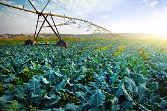

Agricultura moderna é um conjunto de práticas inovadoras que resultam em maior produção rural. Exemplos são a adoção do plantio mecanizado, do sistema de irrigação por gotejamento e das simulações estatísticas que avaliam se uma área é propícia para determinado plantio.
